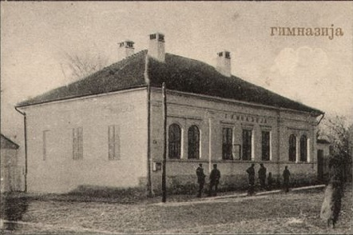
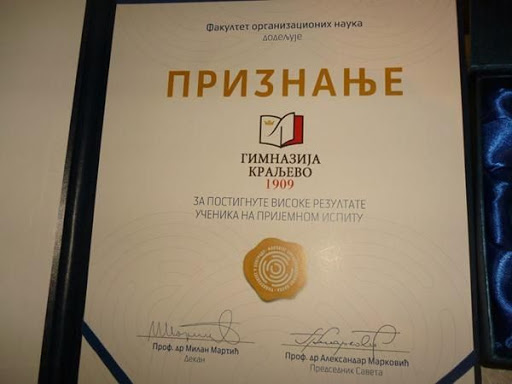
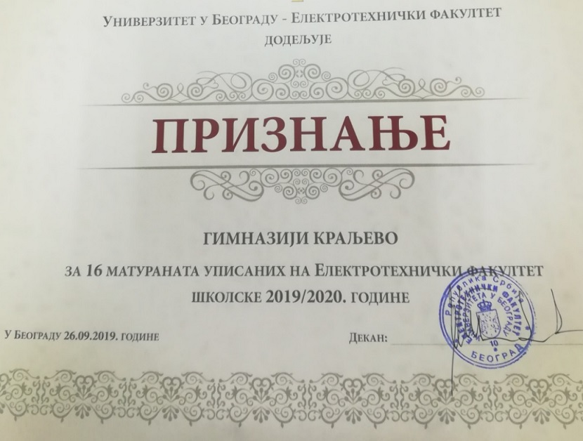

Istorijat
Gimnazija u Kraljevu
Građani Karanovca i episkop Joanikije Nešković pokušavali su sredinom XIX veka, za vreme vladavina kneza Aleksandra Karađorđevića i kneza Mihaila Obrenovića, da osnuju Gimnaziju u Karanovcu. Posle proglašenja Srbije za Kraljevinu, Karanovac je 1882. godine promenio ime u Kraljevo ali je umesto Gimnazije dobio Ratarsku (Poljoprivrednu) školu. Tek 16/29. jula 1909. godine, Ukazom kralja Petra I Karađorđevića, u Kraljevu je osnovana Privatna (četvorogodišnja) gimnazija.
„Inicijativom preduzimljivih građana ovog naprednog mesta, a po odobrenju Ministarstva Prosvete“ 1. septembra 1909. godine počela je prva školska godina Gimnazije u Kraljevu. Pored direktora, Dimitrija S. Jovanovića, u kralje-vačkoj Gimnaziji su predavali nastavnici Savatije Božić, Aleksandar Jovanović, Stojan Milivojević, Stojan Marković, Radosav Delić i Draga Jevtović.
Istaknuti književni kritičar Jovan Skerlić je maja 1910. godine, kao inspektor Ministarstva Prosvete, sastavio sledeći izveštaj o Privatnoj gimnaziji u Kraljevu: „U pogledu reda, rada i rezultata ova mala privatna škola može služiti za primer mnogim državnim školama. Sve je sprovedeno po propisu; radilo se potpuno po programu, sa znatnim rezultatima. Administracija je besprekorna; urednost i čistoća za svaku pohvalu“.
U prvi razred Gimnazije u Kraljevu upisalo se 1909/10. školske godine 47 učenika (29 dečaka i 18 devojčica), a u drugi razred 12 đaka (10 učenika i 2 učenice). Prvi maturanti kraljevačke Gimnazije položili su maturski ispit tokom meseca maja i juna 1912.godine.

U vremenu ratnih godina, od 1915. do 1918., gimnazija je morala da prekine sa radom, da bi 1919. godine u novostvorenoj Kraljevini SHS nastavila svoju prosvetnu misiju. Kralj Aleksandar I Karađorđević je 1. jula 1921. godine objavio Ukaz po kojem je Niža privatna gimnazija u Kraljevu pretvorena u Državnu realnu gimnaziju. Iz zgrade Duhovnog suda Žičke eparhije i Gospodar Vasinog konaka, Gimnazija se preselila 1928. godine u zgradu Ratarske škole. Uz Nižu državnu gimnaziju od 1929 godine postojala je i Kraljevska privatna gimnazija, a tokom 30-ih godina 20. veka uvedeni su i svi razredi Više gimnazije.
Za vreme Drugog svetskog rata i nemačke okupacije Kraljeva(1941-1944), đaci i profesori Gimnazije pretrpeli su najstrašnije posledice nemačkog terora i građanskog rata u Srbiji. Mnogi đaci i profesori su poginuli u stravičnoj odmazdi Nemaca nad Kraljevčanima. Nastava je u tim godinama uglavnom održavana sa prekidima i to u privatnim kućama.
Posle Drugog svetskog rata i pobede socijalizma u Jugoslaviji, Gimnazi-ja u Kraljevu kao i sve škole u tadašnjoj državi, postaje antiteističko-ideološka ustanova u kojoj će vrlo brzo preovladati neograničena vera u znanje i nauku kao pseudo-religija profesora i njihovih đaka. Česte promene naziva škole bile su povezane sa promenama u sistemu obrazovanja. Od 1945. do 1948. godine Državna realna gimnazija, od 1948. do 1951. godine Muška i Ženska gimnazija u Rankovićevu, od 1951. do 1959. Viša mešovita gimnazija, od 1959. do 1979. Gimnazija „Mirko Luković“, od 1979. do 1990. Obrazovno vaspitni centar „Danica Jasnić-Mirko Luković“. Direktori Gimnazije koji su se isticali i u javnom životu jugoslovenske države su bili Radoslav M. Vesnić i Relja V. Novaković.
Od 1990. godine ponovo se uvodi naziv Gimnazija u Kraljevu. Najviše priznanje Gimnazija dobija 2004. godine kada joj je uručena Vukova nagrada za unapređenje kulture u Srbiji. Kraljevačka Gimnazija 2009. godine proslavlja stogodišnjicu postojanja.
Pohvale
Fakultet organizacionih
nauka
Na svečanosti u hotelu „M“ u Beogradu Fakultet organizacionih nauka iz Beograda dodelio je veliko priznanje Gimnaziji Kraljevo. Kraljevačka Gimnazija proglašena je za najbolju u Srbiji u prethodnoj školskoj godini, a kriterijum je bio uspeh učenika na prijemnom ispitu. Nagradu je u ime zaposlenih primio direktor škole Miroslav Vidić. Ovo nije prvi put da se naša Gimnazija nagrađuje, naime, ne tako davne 2004. godine joj je uručena Vukova nagrada za unapređenje kulture u Srbiji.

Elektrotehnički fakultet
Prvo veliko priznanje u ovoj školskoj godini stiglo je od Elektrotehničkog fakulteta. Ovaj prestižni fakultet upisalo je 16 naših maturanata što nas svrstava u red najboljih škola Srbije. Zasluge pripadaju učenicima i svim zaposlenima u našoj školi.
